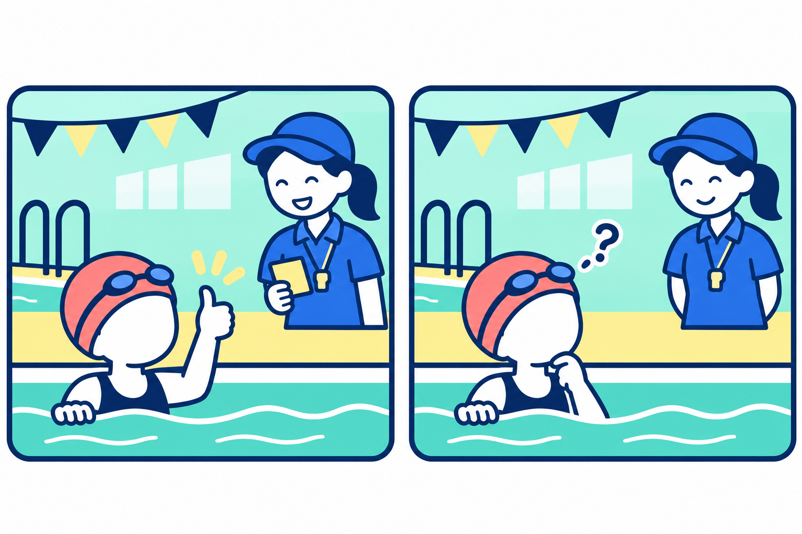
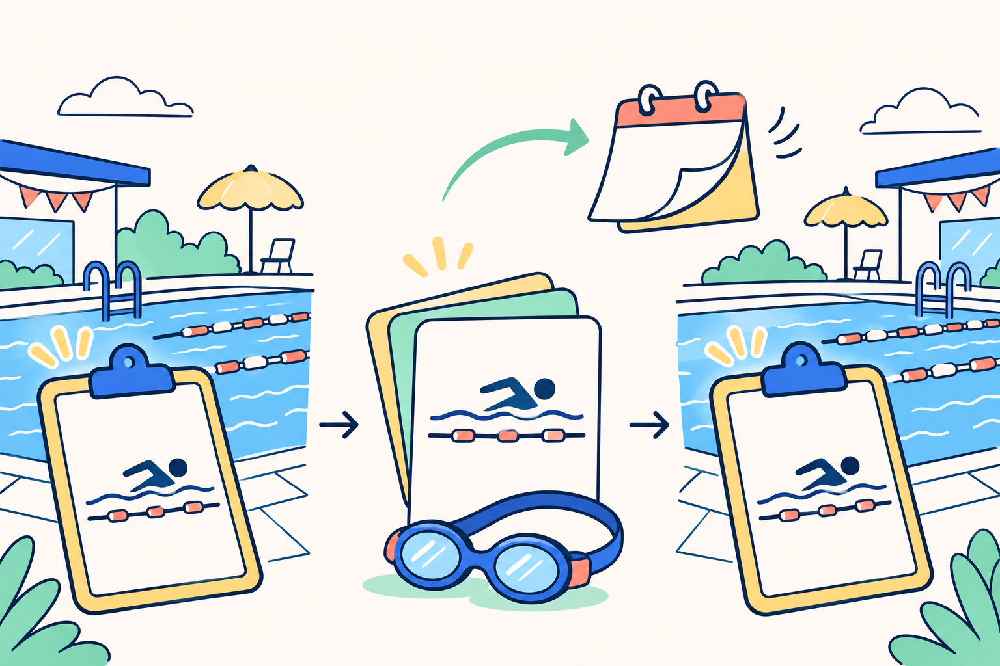
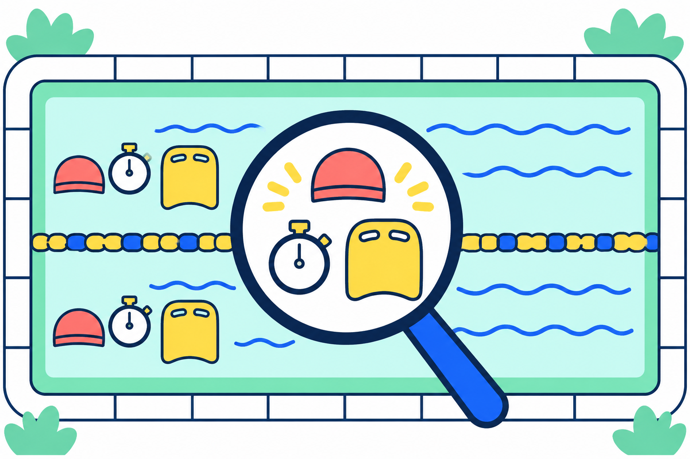
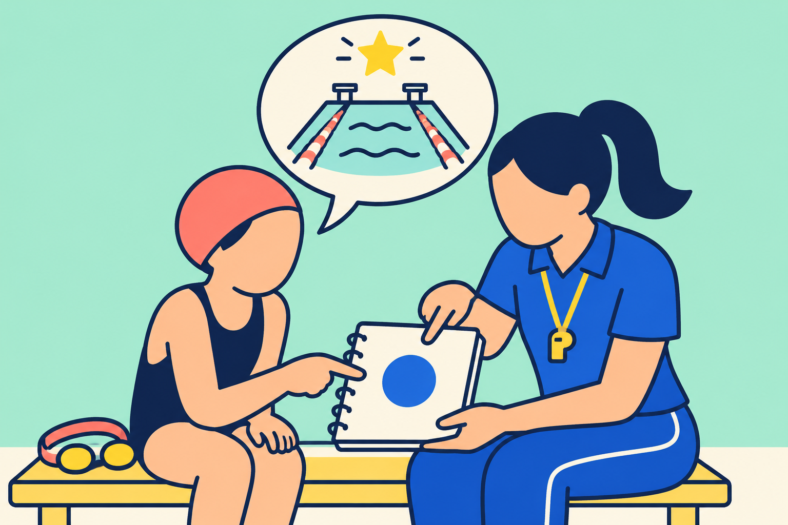

SWIMMING RESEARCH / 19
昨日できた泳ぎ、今日はできない？
「できた一回」を、次につながる手がかりに。
2026年11月6日 公開

昨日のレッスンでは、息継ぎのあとも腕がすっと動いた。ところが、次に泳いだら同じ感じにならない。「せっかく覚えたのに、元に戻った？」。こんな場面を想像してみてください。うまくいった日があるほど、次のつまずきが気になるものです。
一度うまくいかなかっただけで、「覚えた泳ぎが全部なくなった」とは決まりません。 反対に、一度できたことだけで、いつでもできるようになったとも言い切れません。その場でできたことと、時間がたってからできることを、分けて見てみましょう。
この記事は、今日できなかった原因を診断するものではありません。前回と何を比べ、次に何を確かめるかを考える記事です。今日の一本を、自分への判決ではなく、次の練習への手がかりに変えていきます。
1｜「今できた」と「あとでもできる」は、違う問い
たとえば折り紙を、隣の人の手元を見ながら折る場面を考えます。その場では形にできても、翌日、一枚の紙から同じものを折ろうとすると、途中で手が止まるかもしれません。「一度完成した」という事実と、「あとで手順をたどれる」という事実は、同じではないのです。これは違いをつかむためのたとえで、水泳と折り紙が同じ速さで身につくという話ではありません。
動きや記憶の研究を整理したSoderstromとBjorkの総説では、練習中や直後に見える出来ばえと、時間がたっても使える学習を区別しています。その場で成績が上がっても、長く残る変化が同じだけ起きたとは限らず、逆に、その場の成績だけでは見えない学習もあります。SoderstromとBjork、2015
できた日と、確かめる日

その場で、何ができた？
同じ動きを、またできる？
水泳なら「教わった直後にできた」「次の練習でもできた」を別の欄に書く、と考えると分かりやすくなります。研究では、時間をおいてから同じ技能を確かめることを「保持」のテストと呼びます。ここでいう保持は、息を止めることではなく、学んだことが後にも残っているか、という意味です。
前回の成功を取り消す必要はありません。「そのときはできた」は大切な観察です。そこに「どんな助言を受けて、どの動きができたのか」を添えれば、次に確かめる場所が見つかります。全部できたか、全部だめだったかの二択にせず、息継ぎのあと、壁を蹴ったあと、と場面を小さくしてみましょう。
2｜研究でも、練習が終わった日に結論を出さない
泳ぎの教え方を比べるなら、レッスンの最後だけ見れば十分でしょうか。Giannousiらの研究は、競泳経験のない男子大学生60人を対象に、映像と声かけなど、助言の方法が違う4つのグループを比較しました。7週間の練習の前後に加え、終了から2週間、練習をせずに過ごした後にも技術を評価しています。Giannousiら、2017
著者らは、自分の泳ぎの映像と声かけを組み合わせた群で、評価表で調べた泳ぎ方の点数が、他のグループより高かったと報告しました。一方、25mの速さについては、測定のばらつきを考えると、グループ間の違いははっきり確認できませんでした。全く同じ速さだと証明したわけではありません。泳ぎ方の評価は練習前・終了時・2週間後の3回。速さの掲載表は練習前・終了時の2回を比べています。泳ぎ方の点数を「2週間後も速く泳げた」と読み替えることはできません。
研究は、技術を三つの時点で確認

- 1練習前に確認
始める前の技術を評価。
- 27週間の練習 → 終了時
助言の方法が違う4つのグループで練習し、終了時の技術を評価。
- 3練習せず2週間 → 再確認
時間をおいて、技術をもう一度評価。
この研究の泳ぎは、太ももの間に浮具を挟むなど条件が決まっています。子どもが普段の泳ぎを何日で覚えるかを調べた研究ではなく、2週間という間隔が誰にとっても最適だと示したものでもありません。今日の問いへの手がかりは、教えた直後だけでなく、時間をおいた姿も確かめているという点です。
図の「7週間」は練習を続けた期間、「2週間」は終了後から再確認までの期間です。泳ぎ続けた時間でも、一回の休憩時間でもありません。また「後でもできた」と分かっても、まだ試していない速さや別の場所で同じようにできるかは、別の問いとして残ります。
3｜今日は何が違った？ 比べる場面をそろえる
昨日は指導者の短い声かけを聞いてから、余裕を持って泳いだ。今日は長く泳いだ最後に、タイムも気にしながら試した。この二本を比べると、日付のほかにも条件が変わっています。「今日はできなかった」という一つの結果だけでは、時間がたった影響なのか、別の条件の影響なのかを切り分けられません。これは説明のための仮の例です。
まず、何を「できた」と呼んでいたかを確かめます。「上手に泳げた」より、「息継ぎのあとも腕の動きが止まらなかった」のほうが、指導者と同じ場面を見やすくなります。見直す動きを一つにしたら、無理のない距離や速さ、使う道具、助言の有無を、できる範囲で前回とそろえます。
日付以外に、何が変わった？

見たい動き・距離・速さ・道具・助言。
指導者の見守りと、必要な安全の補助。
ただし、安全のための見守りや補助まで外してはいけません。「自分でできるか見る」を「一人で泳がせる」と取り違えないこと。確認の条件は泳力に合わせて指導者と決め、泳ぐ前に必要な説明は受けます。怖さや苦しさがある日は、出来ばえの比較より、その場の安全と安心を優先します。
子どもの水泳学習を整理した2025年のレビューでも、長く残る学びの判断は課題でした。5〜12歳を対象とする23研究のうち、多くは時間をおいた再テストや、条件を変えて使えるかのテストを行っていませんでした。著者らは、方法の長期的な効果を断定できる根拠がまだ十分でないとしています。Minkelsら、2025
だから「この練習なら絶対に忘れない」と約束するよりも、今どんな条件でできるのかを具体的にしておく。大人にも子どもにも、次の相談を始めるための言葉になります。子どもに毎回点数をつける必要はありません。「昨日はここができたね。今日はここを一緒に見よう」で十分です。
4｜次の練習で、前回の一つを確かめる
ここからは、本記事の観察案です。研究のテストをそのまま再現する手順ではありません。いつものレッスンで、準備をして水に慣れたあと、前回取り組んだ一つを指導者と確認してみます。入水直後の一本や、疲れ切った最後の一本で合否を決める必要はありません。
最初に、「前回、何をすると泳ぎやすかった？」と短く振り返ります。言葉が出なければ、指導者に教わったことを一緒に思い出しても構いません。言葉で説明できることと、身体でできることも同じではないので、うまく話せないだけで「忘れた」と判断しないようにします。
次の練習で、一つだけ確かめる

- 1前回の一つを選ぶ
例：息継ぎ後も腕の動きが続いたか。
- 2余裕のある条件で見てもらう
準備と水慣れのあと、指導者と確認する。
- 3結果に合わせて相談する
できたら条件を残す。難しければ助言や課題を相談する。
次に、安全にできる同じ課題を、余裕のある条件で見てもらいます。前回見た動きが出ていれば、その条件で続けて確かめる。うまくいかなくても、すぐに直す点を何個も増やさず、前回役立った助言を一つだけ受けてから、指導者が適切と判断したところで再び試します。
助言のあとに動きが出たなら、「思い出す手がかりがあるとできた」と残せます。助言があっても難しいなら、距離や課題が今の泳ぎに合っているかを相談します。これは原因を特定する検査ではありません。その日だけで技術を捨てたり、できるまで無理に繰り返したりするためのものでもありません。
メモは「何を見た／助言はあったか／どうだった」の三つで足ります。たとえば「息継ぎ後の腕／前回の声かけあり／動きを続けられた」。これは記録の仮例で、研究参加者の結果ではありません。自分の感じと指導者が見たことが違ったら、間違い探しにせず、どの場面を見ていたのかを聞いてみましょう。
「昨日できたのに」を、「どんな条件なら、またできる？」へ。昨日の成功も、今日の戸惑いも、次の一本を選ぶ材料になります。目指したいのは、たまたまうまくいった一回を増やすことだけでなく、自分の泳ぎに戻る道を少しずつ見つけることです。
まとめ｜次の一本につながる見方
研究の目的。 その場の出来ばえと、時間がたっても残る学びを区別し、水泳の教え方をどう評価するかを考えます。
何を比べた？ 2017年の水泳研究は、助言の方法が異なる群について、練習前後と2週間後の技術を比較しました。
何が分かった？ 自分の映像と声かけを用いた群で技術評価が高いと報告されましたが、技術の評価と速さの結果は別です。子どもの長期的な学習については研究上の不足も残ります。
伝えたい結論。 一度の成功や失敗だけで、泳ぎが身についたかを決め切らないこと。時間をおき、条件を確かめてから、もう一度見ます。
次の一手【記事からの提案】。 前回取り組んだ動きを一つ選び、次のレッスンで指導者に見てもらいます。できた条件と役立った助言を短く残し、難しければ課題を相談します。
参考文献と確認範囲
- Soderstrom, N. C. & Bjork, R. A.（2015）Learning Versus Performance: An Integrative Review. Perspectives on Psychological Science, 10(2), 176–199. 原文を読む
- Giannousi, M., Mountaki, F. & Kioumourtzoglou, E.（2017）The effects of verbal and visual feedback on performance and learning freestyle swimming in novice swimmers. Kinesiology, 49(1), 65–73. 原文を読む
- Minkels, C.ほか（2025）Learning how to swim in 5- to 12-year-old children: a scoping review of evidence-based motor learning methods. Frontiers in Sports and Active Living, 7. 原文を読む
2015年総説は発行元の抄録、2017年原著は方法・結果・表1と表2、2025年レビューは抄録と目的・方法の記述を確認しました。2017年原著には方法と結果の群別人数などに表記の不一致があるため、個別の点数や効果量は掲載していません。図は時間・条件・観察の仕方を示す模式図です。今日できなかった個人の原因や、習得までの日数を特定するものではありません。